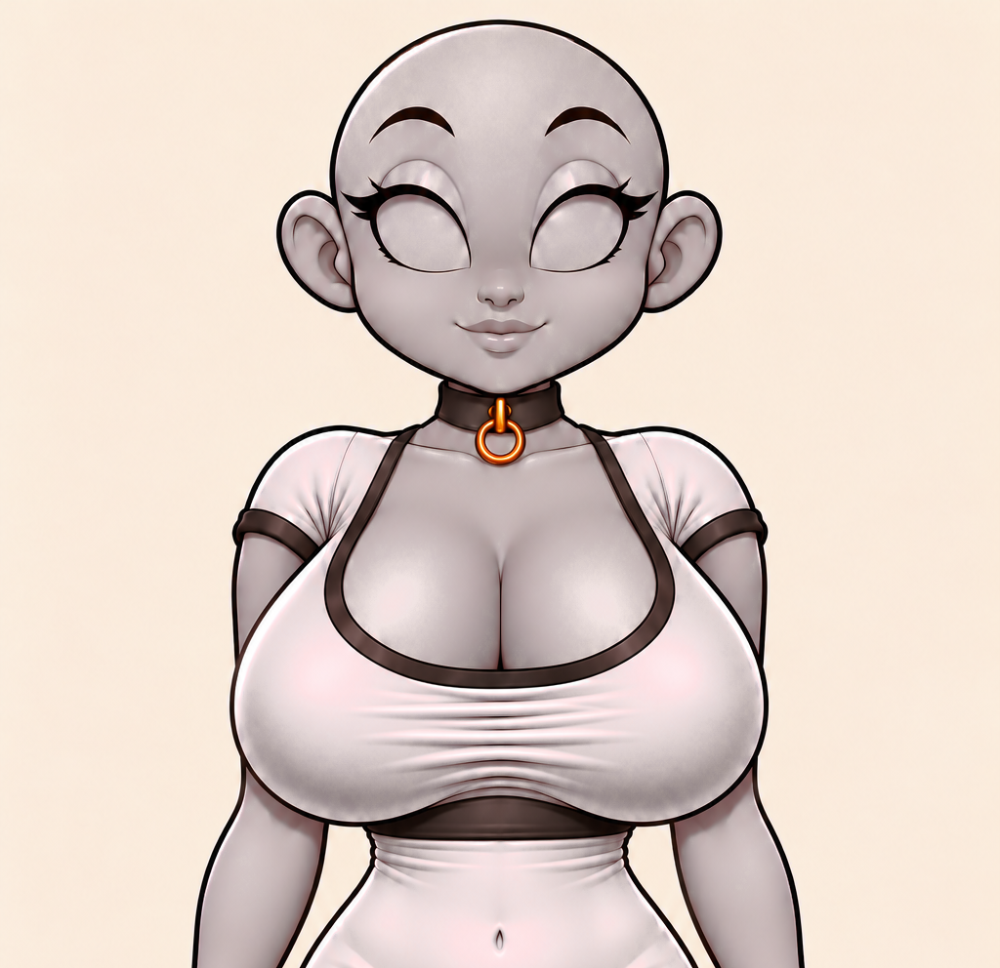
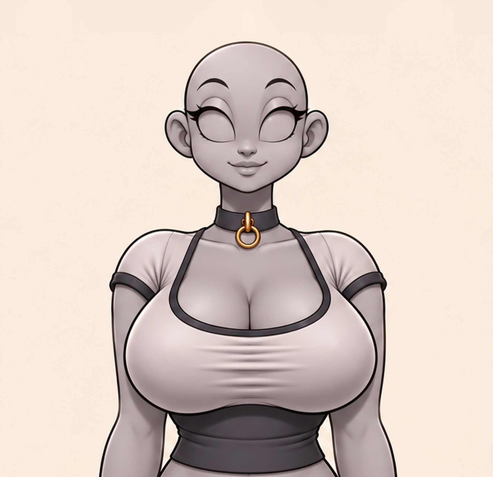
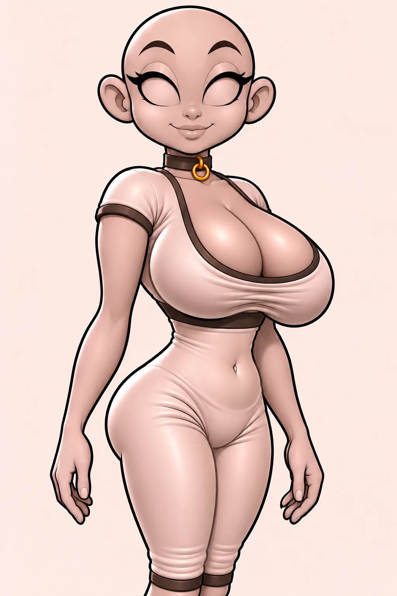

Mother Vale
|Synthetic GoddessAlmighty
PrimaryRegal Orchid#8A6A9E
SecondaryPearl Rose#E7C2C6
AccentSacred Gold#E7C76E
Field Journal & Visual Index
A working record of the girls: their designs, natures, palettes, expressions, and the details we decide to keep.
Working palettes v0.1 — primary, secondary and accent. Extra hair, skin and scale colours remain in study.
One body standard. Many different girls. Sandy models the proportions without distracting character-specific features.
Sandy is our cute, bald mannequin with muted stone-grey clay skin, softly sculpted features, blank uncoloured eyes, a pale grey shirt and a long charcoal underbust band. She makes it easier to compare the actual silhouettes rather than fur, feathers, hair, palettes or personalities. The examples are art-direction diagrams, not measurements.
Broad mid-to-lower fullness, an oblong silhouette and a smoother, supported fabric sweep — without changing the underlying body scale.


Historical before versus the current approved 21 November 2026 bust master. Click either image for its source PNG; the two images were created in different iterations and are not pixel-registered or volume-measured.
Let fullness settle through the middle and lower poles rather than collecting high on the pecs.
Give the mass horizontal breadth and gently lengthened lower curves; avoid two perfect spheres.
Fill the lower sides while keeping armpit and upper-outer fullness unchanged.
Replace the dramatic W-shaped fabric notch with a long lower contour and a modest center rise.
The bust can be wide without widening the ribcage, shoulders, waist or torso underneath.
Use gentle transverse stretch with restrained underside folds. No vacuum-sealed cleavage seams or artificially lifted pouches.
Give the girls an intentionally oversized animated head without shrinking the body or thickening the neck.

The after panel now uses the current locked master (including subsequent bust refinements); this is a progression comparison, not a strictly isolated head-only experiment. Click either picture for its source PNG.
Keep the locked frontal silhouette. Study forward projection independently of width and height.


Smooth, restrained transition below the ribcage.
Gentle contour and unchanged navel placement.
Soft convex contour below the navel.
Restrained depth; preserve hip width.
Natural rounded transition beneath opaque clothing.
Clean transitions between pelvis and thighs.
Hard locks: upper master, ribcage, waist, hip width, abdomen length, pelvic placement, narrower thighs, stance and garment construction. The charcoal band remains intact, with white high-waisted bottoms below it.
These are compressed visual previews. Front-view appearance is approved; actual Z-axis geometry remains provisional until a side or three-quarter study. “Puff” is qualitative shorthand, not a numerical measurement.
The body follows our approved heavy, oblong bust; narrow ribcage and waist; lifted rounded glutes; narrow quadriceps; and selective forward fullness at lower-abdomen region 03 and pelvic region 05.


Rib band downward; waist and hip width; lifted round posterior; slim quadriceps; soft Z-axis fullness at lower abdomen (03) and mons pubis (05); gravity-set oblong bust, retained scale and fabric weight.
Turn the head to face right in three-quarter perspective while preserving her face. Restore the grey clay skin, white shirt/bottoms, black trim and warm-gold collar ring. Do not shift any body proportions.
Sandy is the neutral teaching model, with muted grey clay skin, pale grey shirt, charcoal trim and a thick charcoal ribcage band. Each girl keeps her own face, species traits, hair, eyes, skin, fur, materials, palette and clothing. A bigger head does not mean bigger shoulders, a broader neck or a smaller bust.
Treat the approved visual checkpoints as the target; iterative percentages are art-direction shorthand, not anatomical measurements.
Correct lateral occlusion while preserving the established shape and forward projection.

The earlier profile retained three-quarter geometry. In the approved true 90° view the near contour hides the far contour: one continuous upper slope, forward curve and rounded underside. No doubled silhouette or central cleavage. The neckline and fabric follow the same angle.
Preserve the approved chest projection, lower contour, narrow ribcage relationship and fabric response. Glutes are unfinished; the rest of the lateral anatomy is not locked by this study.
Where observations, references, and revisions belong as the journal grows.
Eye shape, mouth shape, expression studies, and each girl's distinctive emotional read.
Primary, secondary, and accent palettes; patterns, textures, outfits, and collar treatments.
Approved anatomy, proportions, canonical views, exploratory variants, and revision history.
These are working notes, not a finished catalogue. New observations stay provisional until approved; earlier studies remain useful even after a design changes.